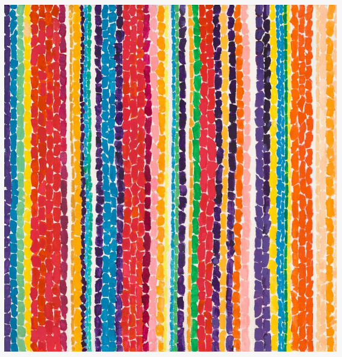
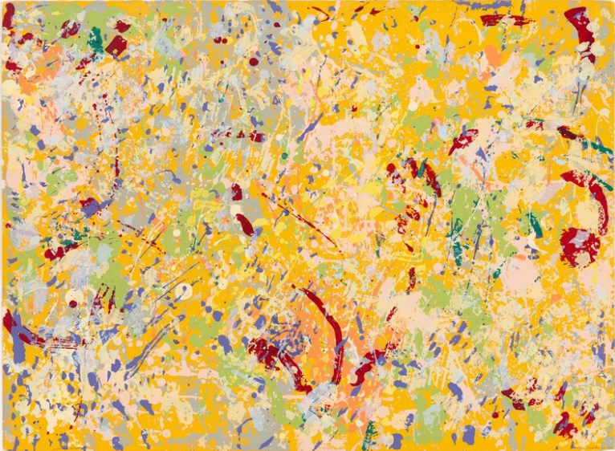
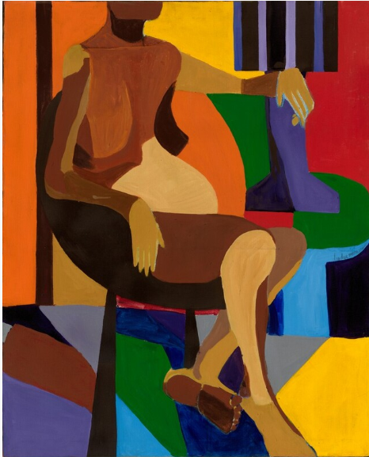
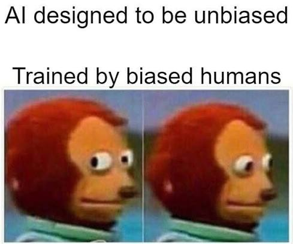

Part 01 Entry point 2026



New Pictures,
same patterns?
04, 08, 07
Testing the racial and gender response bias of three LLMs in college advising
Enter the reportOur path to the Research Question
Is Your College Advisor Racist and Sexist?

01
According to a Pew Research Center survey from December 2025, 64% of teens aged 13 to 17 report using AI chatbots. A large-data analysis published by OpenAI in September 2025 also classified 49% of inquiries as “asking”: ChatGPT (and presumably other LLMs) are increasingly taking on an advisory role. Meanwhile, the formerly theorised reproduction of training data bias is being quantified by researchers as AI tools reproduce stereotypes - and the tools’ performance is observed to be affected by the demographic characteristics of the person using them.
Grander et al (2026) define LLM bias as “systematic distortions, attribution errors, or factual distortions that cause a preference for specific groups or ideas, the perpetuation of stereotypes, or the generation of inaccurate conclusions derived from learned patterns”. While multiple studies have demonstrated the racial and gender bias of AI responses, the impact of this bias in the LLMs’ advisory roles seems underdescribed. We wanted to test these biased advisors by asking one of the most path-determining questions many young people may ask: Where should I go to college?
- We chose to examine three American LLMs: the biggest generalists, Claude and ChatGPT, and a specialized LLM, Solvi designed specifically for college advising. This allows us to see if bias patterns are similar across competitors and how they are affected by specialization.
- The model student was given a fixed US American nationality to investigate bias inside the national context. For college advising, the US context is also especially interesting because of the existence of historically Black-serving or Hispanic-serving colleges and universities (HBCU/HSI), which may be explicitly recommended to members of these groups.
- US American English has been shown to be dominant in the training data of both Claude and ChatGPT. By staying within English prompting and the US context, we avoid the underperformance found across other language groups.
Research question
We thus ended up with the following research question:
To what extent is the advice given
- by ChatGPT, Claude and Solvi;
- to US American students;
- on whether and where the user should pursue higher education;
biased along axes of racialisation and gender?
Our hypotheses
- Latinx and Black-sounding names will receive suggestions of comparatively less prestigious institutions relative to the white baseline and East Asian-sounding names, possibly resulting from the recommendation of historically minority-serving colleges.
- Women-identified names will receive suggestions of comparatively less prestigious institutions relative to the men-identified baseline.
Explore the study